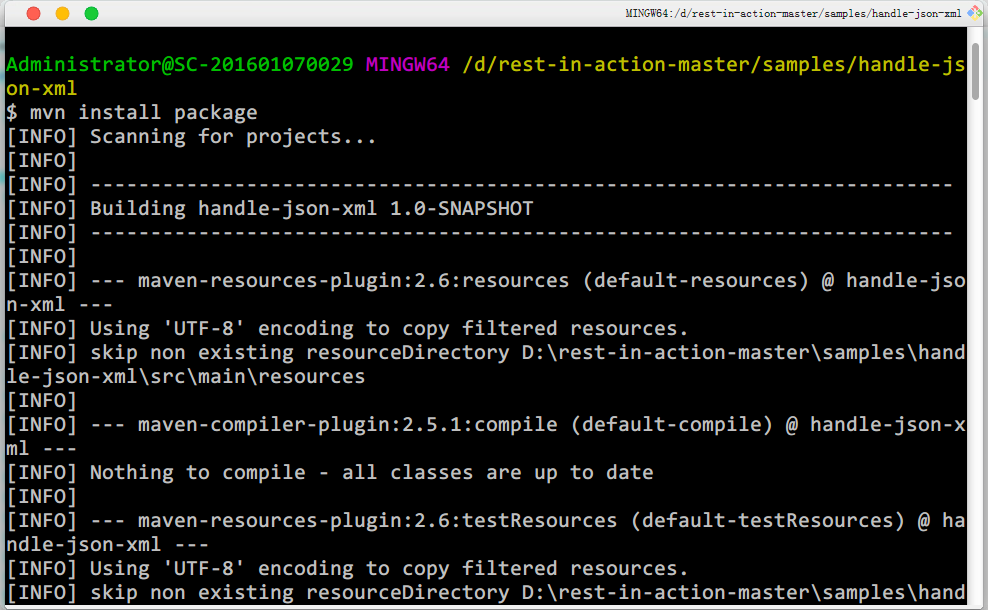
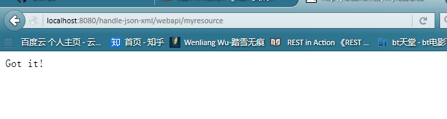
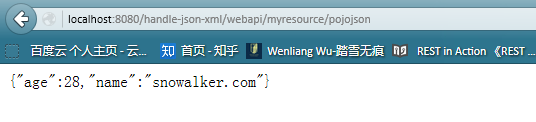
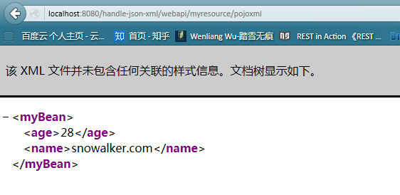

<project xmlns="http://maven.apache.org/POM/4.0.0" xmlns:xsi="http://www.w3.org/2001/XMLSchema-instance"
xsi:schemaLocation="http://maven.apache.org/POM/4.0.0 http://maven.apache.org/maven-v4_0_0.xsd">
<modelVersion>4.0.0</modelVersion>
<groupId>com.snowalker</groupId>
<artifactId>handle-json-xml</artifactId>
<packaging>war</packaging>
<version>1.0-SNAPSHOT</version>
<name>handle-json-xml</name>
<build>
<finalName>handle-json-xml</finalName>
<plugins>
<plugin>
<groupId>org.apache.maven.plugins</groupId>
<artifactId>maven-compiler-plugin</artifactId>
<version>2.5.1</version>
<inherited>true</inherited>
<configuration>
<source>1.7</source>
<target>1.7</target>
</configuration>
</plugin>
</plugins>
</build>
<dependencyManagement>
<dependencies>
<dependency>
<groupId>org.glassfish.jersey</groupId>
<artifactId>jersey-bom</artifactId>
<version>${jersey.version}</version>
<type>pom</type>
<scope>import</scope>
</dependency>
</dependencies>
</dependencyManagement>
<dependencies>
<dependency>
<groupId>org.glassfish.jersey.containers</groupId>
<artifactId>jersey-container-servlet</artifactId>
</dependency>
<dependency>
<groupId>org.glassfish.jersey.media</groupId>
<artifactId>jersey-media-moxy</artifactId>
</dependency>
<dependency>
<groupId>junit</groupId>
<artifactId>junit</artifactId>
<version>3.8.1</version>
<scope>test</scope>
</dependency>
</dependencies>
<properties>
<jersey.version>2.16</jersey.version>
<tomcat7.version>2.2</tomcat7.version>
<jetty.version>9.2.9.v20150224</jetty.version>
<project.build.sourceEncoding>UTF-8</project.build.sourceEncoding>
</properties>
</project>
可以看到我们使用了jersey依赖包，junit测试框架
package com.snowalker.rest.bean;
import javax.xml.bind.annotation.XmlRootElement;
@XmlRootElement
public class MyBean {
private String name;
private int age;
public String getName() {
return name;
}
public void setName(String name) {
this.name = name;
}
public int getAge() {
return age;
}
public void setAge(int age) {
this.age = age;
}
}
package com.snowalker.rest.resource;
import javax.ws.rs.GET;
import javax.ws.rs.Path;
import javax.ws.rs.Produces;
import javax.ws.rs.core.MediaType;
import com.snowalker.rest.bean.MyBean;
/**
* 根资源 (暴露在"myresource"路径)
*/
@Path("myresource")
public class MyResource {
/**
* 方法处理 HTTP GET 请求。返回的对象以"text/plain"媒体类型
* 给客户端
*
* @return String 以 text/plain 形式响应
*/
@GET
@Produces(MediaType.TEXT_PLAIN)
public String getIt() {
return "Got it!";
}
/**
* 方法处理 HTTP GET 请求。返回的对象以"application/xml"媒体类型
* 给客户端
*
* @return MyPojo 以 application/xml 形式响应
*/
@GET
@Path("pojoxml")
@Produces(MediaType.APPLICATION_XML)
public MyBean getPojoXml() {
MyBean pojo = new MyBean();
pojo.setName("snowalker.com");
pojo.setAge(28);
return pojo;
}
/**
* 方法处理 HTTP GET 请求。返回的对象以"application/json"媒体类型
* 给客户端
*
* @return MyPojo 以 application/json 形式响应
*/
@GET
@Path("pojojson")
@Produces(MediaType.APPLICATION_JSON)
public MyBean getPojoJson() {
MyBean pojo = new MyBean();
pojo.setName("snowalker.com");
pojo.setAge(28);
return pojo;
}
}
package com.snowalker.rest;
import org.glassfish.jersey.server.ResourceConfig;
/**
* REST 主应用
*/
public class RestApplication extends ResourceConfig {
public RestApplication() {
//资源类所在的包路径
packages("com.snowalker.rest.resource");
}
}
<?xml version="1.0" encoding="UTF-8"?>
<!-- This web.xml file is not required when using Servlet 3.0 container,
see implementation details http://jersey.java.net/nonav/documentation/latest/jax-rs.html -->
<web-app xmlns:xsi="http://www.w3.org/2001/XMLSchema-instance" xmlns="http://java.sun.com/xml/ns/javaee" xsi:schemaLocation="http://java.sun.com/xml/ns/javaee http://java.sun.com/xml/ns/javaee/web-app_2_5.xsd" version="2.5">
<servlet>
<servlet-name>Jersey Web Application</servlet-name>
<servlet-class>org.glassfish.jersey.servlet.ServletContainer</servlet-class>
<init-param>
<param-name>javax.ws.rs.Application</param-name>
<param-value>com.snowalker.rest.RestApplication</param-value>
</init-param>
<load-on-startup>1</load-on-startup>
</servlet>
<servlet-mapping>
<servlet-name>Jersey Web Application</servlet-name>
<url-pattern>/webapi/*</url-pattern>
</servlet-mapping>
</web-app>
webapi/myresource/pojoxml 用xml格式显示定义的bean信息
<%@ page language="java" contentType="text/html; charset=utf-8"
pageEncoding="utf-8"%>
<!DOCTYPE html PUBLIC "-//W3C//DTD HTML 4.01 Transitional//EN" "http://www.w3.org/TR/html4/loose.dtd">
<html>
<head>
<meta charset="utf-8">
</head>
<body>
<h2>Java RESTful webservice Jersey 实现</h2>
<p><a href="webapi/myresource">Got it</a>
<p><a href="webapi/myresource/pojojson">POJO JSON</a>
<p><a href="webapi/myresource/pojoxml">POJO XML</a>
</body>
</html>